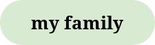
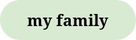
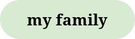
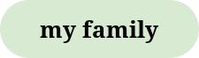

 

I did a part-time job back in 2016 while waiting for my SPM results as Retail Assistant in Popular Bookstore nearby my home. I learnt how to handle the store's inventory, customer service, and managed stocks. I worked there for 6 months. In 2017, I came back to work part-time again but only for 3 months. The whole working experience really thought a lot of meaningful things that I know I can only learn in the outside world. Most importantly, I learned of how to connect with people and it really is useful to me 'till this day.
During the month of October in 2017, I was chosen to represent the Faculty of Accountancy for the Public Speaking Competition organized by UiTM. The given topic was "Navigating the Digital World Safely and Responsibly", and I only got a couple of months to prepare. Alhamdulillah, I won first place. I honestly didn't expect to win, but I really deserved it.